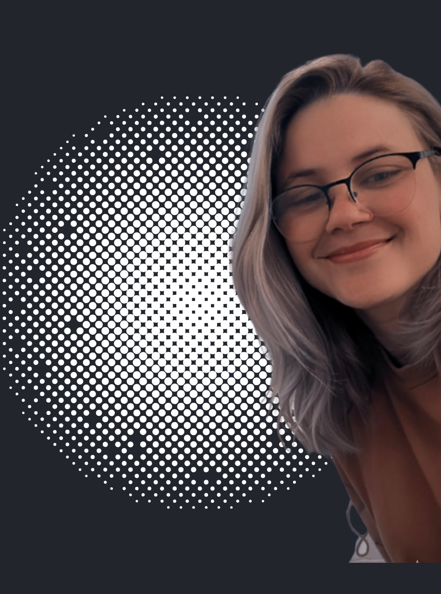

BACKEND SOFTWARE ENGINEER
Especialista em sistemas resilientes com Java, Node.js e Azure. Unindo alta performance de desenvolvimento com sólida visão de infraestrutura.

Sobre Mim
Minha trajetória na tecnologia começou no "coração" da operação: Infraestrutura e Suporte. Essa base sólida me conferiu uma visão 360° que diferencia meu trabalho — eu não apenas escrevo código, eu entendo como o sistema se comporta sob carga, na rede e no servidor.
Atualmente, como Backend Software Engineer, foco na construção de APIs RESTful escaláveis utilizando o ecossistema Java e Node.js. Sou movida por desafios que envolvem Clean Code, POO e arquiteturas preparadas para Cloud Azure.
Especialista Backend
Azure Certified
Especialidades Técnicas
Java & Spring Boot
Node.js
MySQL & PostgreSQL
Azure Cloud
Infra & Suporte
Bootstrap
Docker & Containers
Arquitetura de APIs